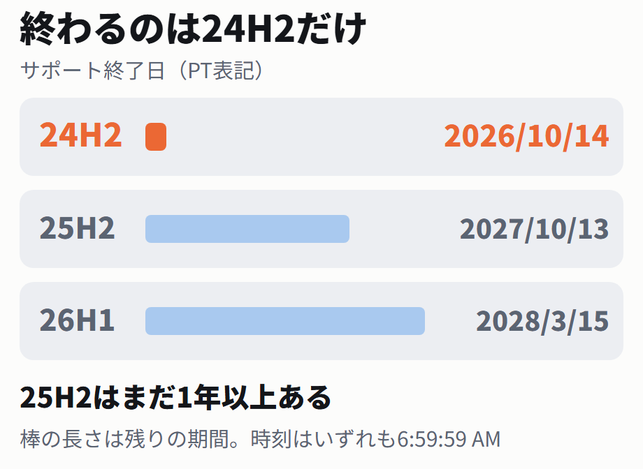

Microsoft Learnのライフサイクルページ「Windows 11 ホーム アンド プロ」に、バージョンごとの開始日と終了日が表で載っています。適用されるエディションは、Home、Pro、Pro Education、Pro for Workstations、SEです。
ページには「サポートの日付は、太平洋標準時ゾーン (PT) - Redmond、WA、USA で表示されます」と書かれています。表の日付はすべて現地時間です。
| バージョン | 開始日（PT） | 終了日（PT） |
|---|---|---|
| 26H1 | 2026/2/10 8:00:00 AM | 2028/3/15 6:59:59 AM |
| 25H2 | 2025/9/30 8:00:00 AM | 2027/10/13 6:59:59 AM |
| 24H2 | 2024/10/1 8:00:00 AM | 2026/10/14 6:59:59 AM |
| 23H2 | 2023/10/31 | 2025/11/12（終了済み） |
| 22H2 | 2022/9/20 | 2024/10/9（終了済み） |

終了日の時刻はいずれも 6:59:59 AM です。24H2の 2026/10/14 6:59:59 AM（PT）は、日本時間では2026年10月14日22:59:59にあたります。
日本時間への換算のしかたを見る
10月14日は米国の夏時間の期間内なので、太平洋時間は協定世界時より7時間遅れます。6:59:59 − (−7時間) = 13:59:59 UTC。日本標準時は協定世界時より9時間進んでいるので、13:59:59 + 9時間 = 22:59:59（同日）。この換算は筆者が計算したもので、Microsoftのページには日本時間の記載はありません。ページには注記もあります。「Windows 11バージョン 24H2 は、Windows 11 SE エディションでサポートされている最後のバージョンでした」と書かれています。